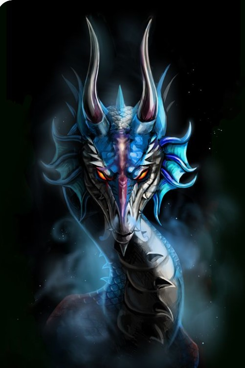

 A lonely figure wanders the world, its stature towering above the rest with overwhelming regalty. But behing the royal facade hides an ancient being haunted by the mistakes of its past. Tread lightly when passing by the King, as your presence can be percieved as a welcomed company or as a grave affront to its considerable majesty. Few have seen this creatures magnificent form and fewer lived to tell the tale of King Kai of Asha - a King without a court.
Powers
1) Premonitions of the mad king
"Insanity, such a strong word... Who wouldnt go insane in the mist that tears up your flesh and soul?
As far as I'm concerned it is insane not to be somewhat quirky wouldnt you agree?"
Kai to one of the Smugglers right after boarding their ship.
As the mist penetrates the lungs its corrupting influence seeps into the victims very soul, plaguing it with visions of what was, is or will be,
with undefined timelines and meanings. Justly it makes the ones touched by the mist feared in the realms.
But for the mad king it seems that with furthering of his madness he reclaims his regalty, and more of his Kingly self,
killing the fool inside.
On top of self, more and more power of King Kai is reclaimed as he submits himself to madness as if this power is gifted by the mist itself.
Age: 600(0);? Height: 1.87m; Weight: 89kg. Str: 11 Dex: 14 Con: 18 Int: 20 Wis: 14 Cha: 12